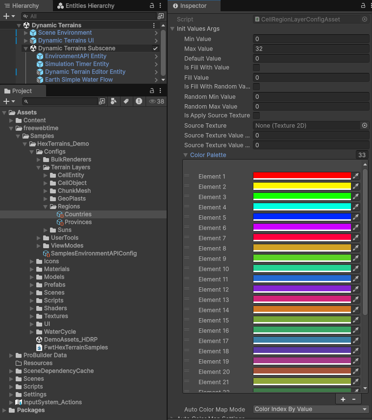

CellRegionLayerConfigAsset

CellRegionLayerConfigAsset is a Unity ScriptableObject that configures how a CellRegionLayer initializes its cell → region index map (CellRegionMap), including its color palette / auto color mapping.
It plays two roles:
Layer factory
InheritsHexTerrainLayerConfigAsset<CellRegionLayer>(implementsITerrainLayerFactory), so aHexTerrainLayerGroup<T>can callCreateTerrainLayer()on the asset to instantiate aCellRegionLayer.Initialization payload
ImplementsICellRegionConfig, whichCellRegionLayer.Init(settings, args)consumes to initialize the region map.
Source:
com.freewebtime.hexterrains/Runtime/Regions/Data/CellRegionLayerConfigAsset.cs
How this config is used during CellRegionLayer initialization
At runtime the CellRegionLayer is initialized in two stages:
CellRegionLayer.Init(settings)allocates/initializes the internal data layers:CellRegionMap(per-cell region index)RegionCells(region index → list of cells)RegionSizes(region index → cell count), initialized to capacity255
CellRegionLayer.Init(settings, ICellRegionConfig args)applies the config:- calls
InitColoredDataLayer(CellRegionMap, args.InitValuesArgs)to initialize:- the region indices (optionally filled/random/texture-driven)
- the color palette & auto-color-map mode for
CellRegionMap.ColorMap - dirty flags (so downstream computations can react)
- calls
flowchart TD
A["Scene passes CellRegionLayerConfigAsset as init args"] --> B["HexTerrainLayerGroup<T>.CreateTerrainLayer(initArgs)"]
B --> C["CellRegionLayerConfigAsset.CreateTerrainLayer() → new CellRegionLayer()"]
C --> D["CellRegionLayer.Init(settings) allocates Region layers"]
D --> E["CellRegionLayer.Init(settings, args) applies InitValuesArgs to CellRegionMap"]
E --> F["CellRegionMap becomes dirty → CalcRegionsCells(Entity, CellRegionLayer, int) / CalcRegionsSizes(JobHandle) can run"]
What initialization affects later
Because InitColoredDataLayer(...) marks chunks dirty, the following methods will typically do work after initialization (or after edits):
CellRegionLayer.CalculateColorMap(...)(uses palette + values)CellRegionLayer.CalcRegionsCells(...)(rebuildsRegionCells) — runs only ifCellRegionMap.IsDirtyCellRegionLayer.CalcRegionsSizes(...)(recomputesRegionSizes) — runs only ifCellRegionMap.IsDirty
Field reference: CellRegionLayerConfigAsset
1) Init Values Args (_initValuesArgs / InitValuesArgs)
Type: InitColorMapCellValueDataLayerArgs<int>
Meaning:
- Controls how
CellRegionLayer.CellRegionMapis initialized:- what integer region index each cell starts with
- how the color map is generated (palette + auto-color-map mode)
Where it’s used:
- In
CellRegionLayer.Init(settings, ICellRegionConfig args):InitColoredDataLayer(CellRegionMap, args.InitValuesArgs)
What it affects:
- Initial region assignment (the values stored in
CellRegionMap.Data) - Color map rendering of regions (via
CellRegionMap.ColorMap), which depends on:InitValuesArgs.ColorPaletteInitValuesArgs.AutoColorMapModeInitValuesArgs.MinValue/MaxValue(depending on the selected mode)
Important implementation behavior (from InitColoredDataLayer extension):
- Always calls
InitDataLayer(...)first (fill/random/texture apply if enabled) - If the data layer supports auto color mapping, applies:
AutoColorMapMode,MinValue,MaxValue
- Calls
InitColorPalette(args.ColorPalette) - Marks all chunks dirty
Practical constraints implied by CellRegionLayer
RegionSizesis initialized with a fixed length255, and region-size calculation assumes a fixed-size array of 255 entries.- In practice, keep region indices in a range that matches that (
0..254or0..255depending on how you treat the last slot). The layer jobs allocate/clear255entries each time.
2) Auto Color Map Settings (_autoColorMapSettings)
Type: AutoColorMapSettings
Meaning:
- Editor/runtime helper settings used to generate a color palette (list of
Color32) for region indices.
Where it’s used:
- Only inside the config asset method:
AutoFillColorPalette()
- That method calls:
_autoColorMapSettings.AutoFillColorPalette(_initValuesArgs.ColorPalette, _initValuesArgs.MaxValue, true);
What it affects:
- It mutates
InitValuesArgs.ColorPalettein-place (clears and refills it). - By default it makes the first color transparent (
isFirstColorTransparent = true), which is commonly used to represent “region 0 = unassigned/none”.
AutoColorMapSettings fields (generation behavior)
These fields control how the palette is generated in HSV space:
StepsPerCircle
Used to compute how many “circles” of colors exist (affects saturation/brightness progression per circle).
(Note: the current hue calculation usesHueStep * i, so “circle” impacts saturation/brightness more than hue.)CircleOffset
Present in the struct but currently not applied (the offset formula is commented out inAutoFillColorPalette).MinSaturation,MaxSaturation
Saturation is interpolated from min→max across circles.MinBrightness,MaxBrightness
Brightness/value is interpolated from min→max across circles.HueStep
Hue progresses byHueStepper color:hue = (HueStep * i) % 1f.
3) AutoFillColorPalette() (context menu action)
This is not a serialized field, but it’s part of the asset’s authoring workflow.
How it’s intended to be used:
- In the Inspector, right-click the asset header and run
AutoFillColorPalette. - It regenerates
InitValuesArgs.ColorPalettebased on:InitValuesArgs.MaxValue(the requested palette “count”)_autoColorMapSettingsparameters- with the first color set to transparent
What to watch:
- The generated palette size depends on the exact value passed as
count(InitValuesArgs.MaxValueas implemented). - If you expect a palette entry for region index
MaxValueand region indices are inclusive, verify the palette length matches your indexing scheme (this method does exactly what it’s coded to do).
Summary: what this asset controls vs what it does not
Controls directly (during init):
CellRegionMapinitial values (region indices per cell)CellRegionMapcolor palette + auto-color-map mode
Controls indirectly (via dirty flags / downstream jobs):
- Whether
RegionCells/RegionSizeswill be recomputed after init
Does not directly configure:
- The maximum region count used by
RegionSizes(hardcoded to255inCellRegionLayer.Init) - Any region “metadata” beyond an integer id (names, borders, etc. are outside this layer)